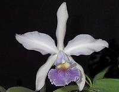

Fajtái
Trópusi
A trópusi orchideák hajtásrendszere alapvetően kétféle csoportra osztható.
A hajtásnövekedése, kifejlődése után leáll, a továbbnövekedést a későbbiekben az egyik oldalrügy biztosítja (pl. csónakorchidea).
Hajtása függőlegesen nő és folyamatosan biztosítja a továbbnövekedést, meg a virágzati szárak a hajtás oldalrügyeiből fejlődnek (pl. pillekosbor)
A gyökérzetük életmódjuktól függően változatosan alakulhat. A talajlakó fajoké vastag, ritkás és törékeny; míg a fán élőké dúsak, vastagok, és szorosan az élőhelyül szolgáló fához tapadnak, végük zöld, jelezve hogy itt is folyik tápanyag-előállítás. Felületüket egy speciális szivacsos réteg fedi, amely elősegíti a tápanyagok és a víz felvételét a környezetből.
A párologtatás csökkentése érdekében a magasban élő orchideák levelei merevek, bőrneműek, méretük kicsi, míg a talajon élőké puha és nagyméretű, mivel ott magasabb a páratartalom és több vízhez jutnak a növények.
Hibrid
A hibrid fajták változatossága szinte megszámlálhatatlan. Néhány hibridnek nincs is neve csak száma. Persze vannak jellegzetes nemzetségek, amiket a tenyésztésnél felhasználnak.
|
Phalaenopsis
Ez a fajta az egyik legkedveltebb, hiszen akár 3-6 hónapon keresztül is virágzik. Nem nagyigényű, ezért a lakásokban is jól érzi magát.
|

|
Cattleya
Dél-Amerikában honos fán élő fajta. Nagy, illatos virága és fajtagazdasága miatt közkedvelt.
|

|
Cymbidium
Ezzel a változattal találkozunk legtöbbször, hiszen vágott formában előszeretettel vásárolják.
|

|
Laelia
Braziliában honos fajta (980-1400 m). Földben gyökerező fajta.
|

|